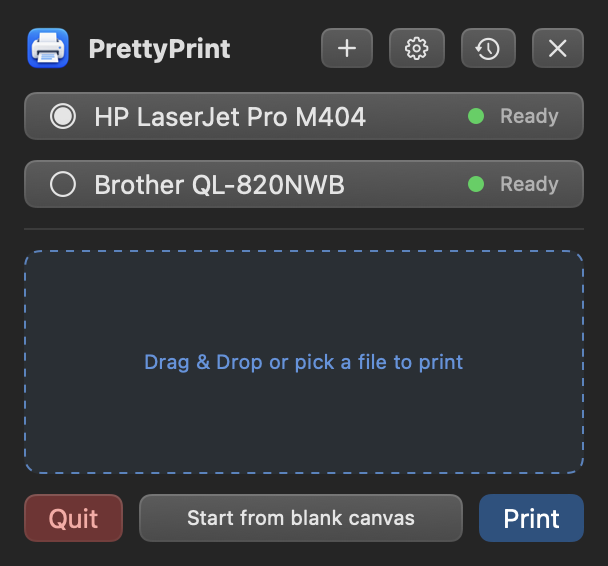
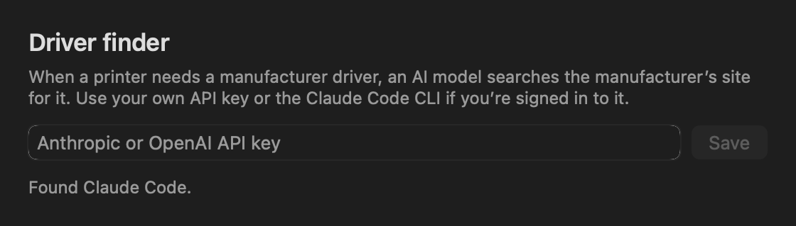

Pretty
Print
Print from your Mac’s menu bar. Drop in files, set copies, lay out a page, and print.
Download for MacmacOS 14 or later · Apple silicon and Intel · Free, Apache 2.0

Install
- Open PrettyPrint.dmg and drag PrettyPrint into Applications.
- Open PrettyPrint. macOS says it can’t verify the developer, because the app isn’t notarized yet. Click Done.
- In System Settings › Privacy & Security, click Open Anyway next to PrettyPrint, then confirm with your password.
PrettyPrint lives in the menu bar under the printer icon and opens at login. Turn that off in System Settings › General › Login Items.
What it does
- A print queue in the menu bar
- Drag files onto the icon or pick them, set copies for each, and print the whole queue at once.
- Every printer your Mac knows
- Shows each printer’s live status, picks one that’s ready, and prints two-sided where the printer supports it.
- Page layout
- Place images, PDF pages, and text on one sheet with rulers, gridlines, snapping, and rotation, sized to the printer’s paper.
- Add printers
- Finds printers on your network and over USB. AirPrint printers are added without a driver, and anything else is one click away in macOS Printers & Scanners.
- Print history
- Your last five printed files, one click from the queue.
- A shortcut for everything
- Every action has a keyboard shortcut, and you can change any of them in Settings.
Driver finder
Some printers, label printers especially, need a driver from their manufacturer. PrettyPrint can find it with an AI model you already pay for.
- Paste an Anthropic or OpenAI API key, stored in your Keychain, or use the Claude Code CLI if you’re signed in.
- Only the printer’s name, model, and hardware ID, your macOS version, and your Mac’s chip type are sent.
- PrettyPrint opens an installer only if Apple notarized it for a verified developer, shows you who signed it, and waits for your approval.
